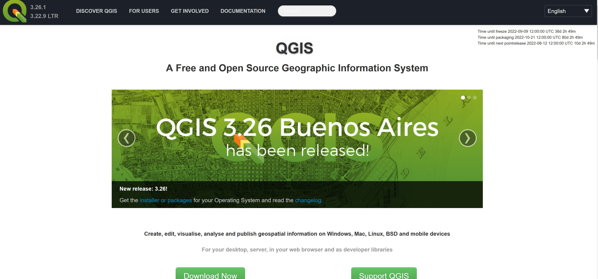
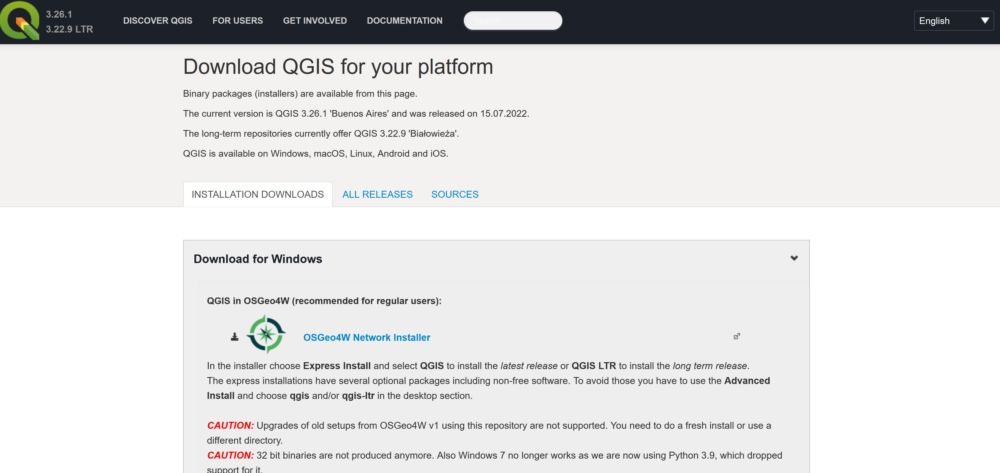
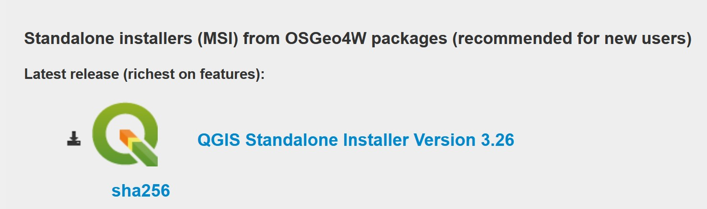
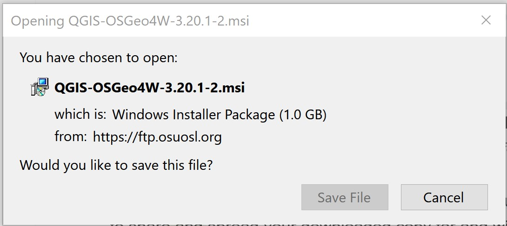
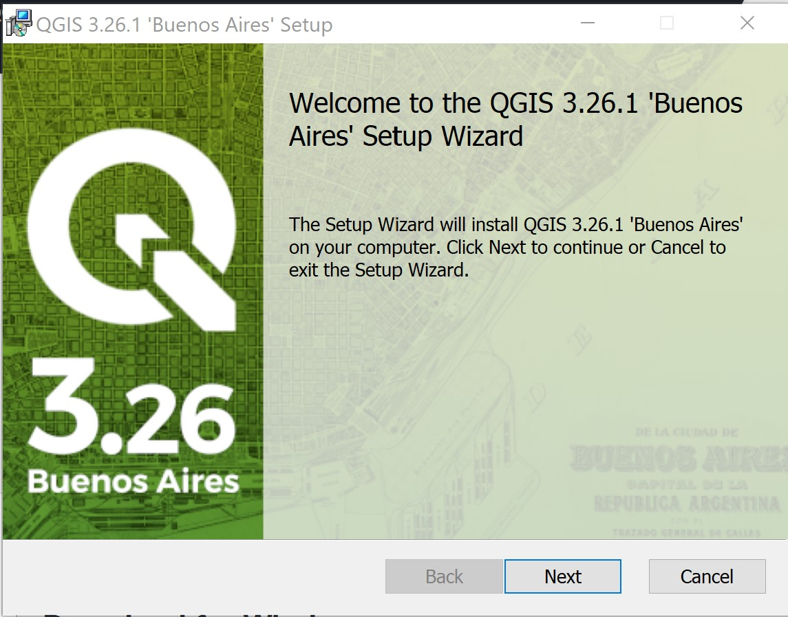
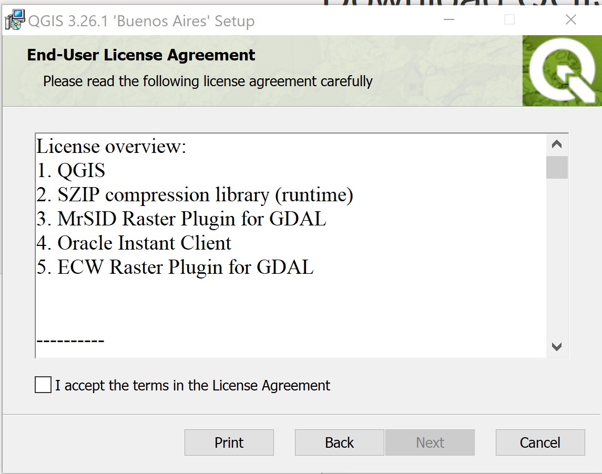
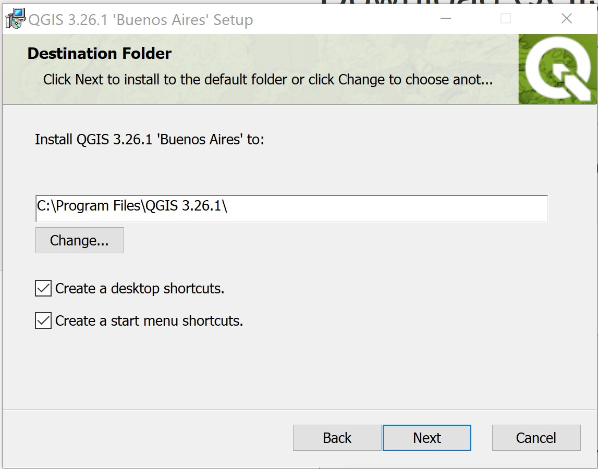
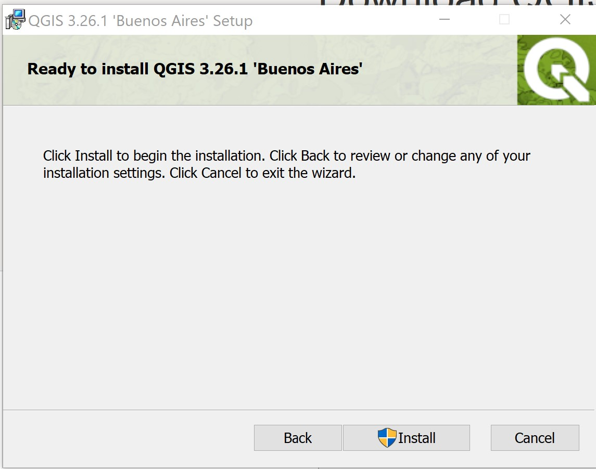
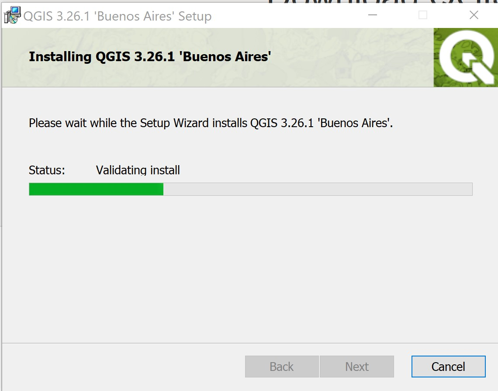
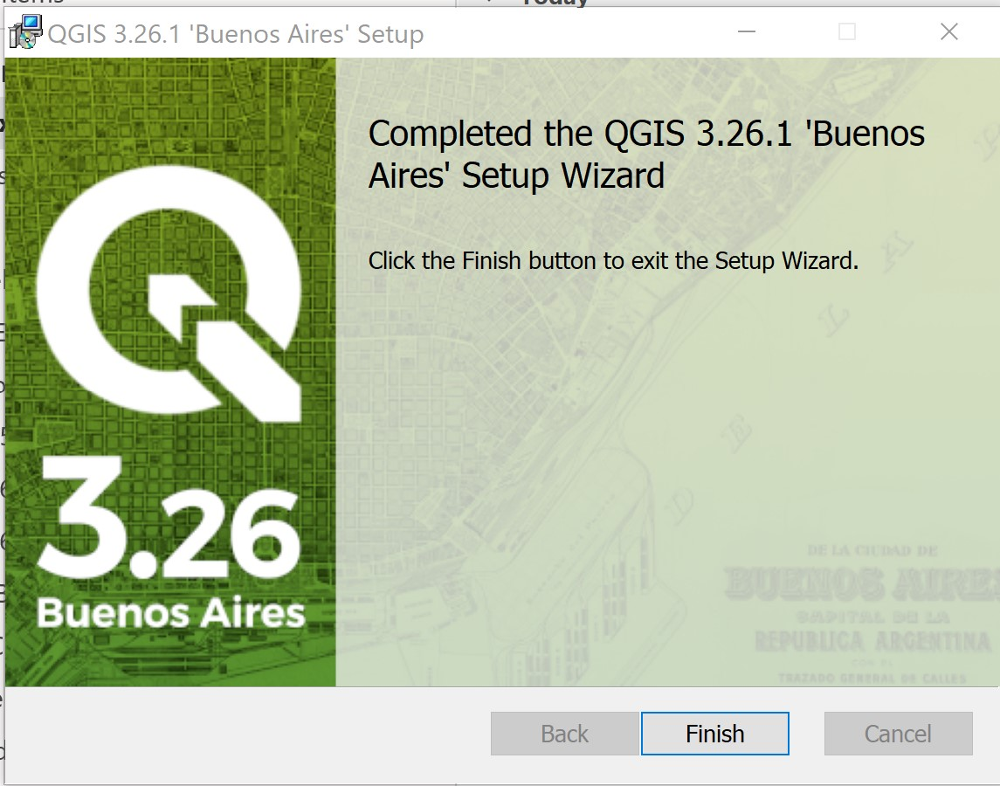

1 Introduction
QGIS (formally known as Quantum GIS) is a full-features open source GIS software. It is the GIS tool used in this course.
This section provides you with step-by-step guide on how to download and install QGIS in your window-based computer (i.e. desktop or laptop).
1.1 Downloading QGIS installer
Launch the web browser.
In the address bar at the top of the window, enter http://qgis.org/ and press Enter.
The website should look something like this:

- Click on Download Now button.
Your screen should look similar to the figure below.

- Click on QGIS Standalone Installer Version 3.26

After a few seconds (depend on your network speed), a pop-up window appears.

- Click on the Save File button.
Be patient, the downloading will take a few minutes depend on the speed of your internet.
1.2 Installing QGIS
In this section, you will learn how to install QGIS into your computer.
Find the QGIS installer on your computer, right-click and select Install from the context menu to launch the setup.
Click on the Yes button when Windows prompt you with the dialog “Do you want to allow this app to make change to your device?”
After a few second, the Setup Wizard dialog window appears.

- Click on the Next button.
The End-User License Agreement dialog window appears.

Click on the checkbox in front of I accept the terms in the License Agreement button.
Then, click on Next button.
The Destination Folder dialog window appears.

Ensure that the Destination Folder is at
C:\Program Files\QGIS 3.26.1\Keep both checkboxes selected.
Click on the Next button.
The Ready to install QGIS 3.26.1 ‘Buenos Aires’ dialog window appears.

- Click on Install button to start the installation process.

QGIS will begin to install. It may take a few minutes to install so be patient.
When the installation is completed, a Setup Wizard window look similar to the screenshot below appears.

- Click on Finish button.
Congratulations! You have installed QGIS successfully!